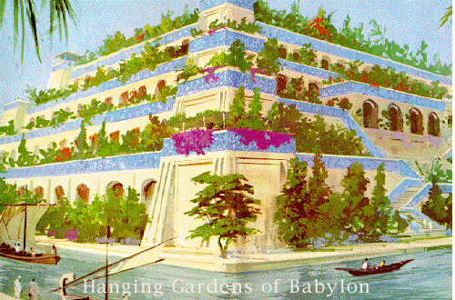

The Hanging Gardens of Babylon
Herodotus described the Babylon of Kink Nebuchadnezzar II as a city that surpasses any other city in splendor. Herodotus' description of the Hanging Gardens stated that the outer walls of Babylon ran 56 miles long, were 80 feet thick and 320 feet tall. Inside of Babylon was the Tower of Babel, which was built to reach to the heavens and dedicated to the god Marduk. Modern analysis points to an outer wall size of 10 miles in length and a significantly lower height.
The Hanging Gardens were built by King Nebuchadnezzar around 600 B.C. Legend states that the gardens were built to please Nebuchadnezzar's wife, Amyitis. The name 'Hanging Gardens' is most likely an improper translation of the original Greek word kremastros, which doesn't mean 'hanging', but 'overhanging'. Strabo, a 1st century BC geographer, said "It consists of vaulted terraces raised one above another, and resting upon cube-shaped pillars. These are hollow and filled with earth to allow trees of the largest size to be planted. The pillars, the vaults, and terraces are constructed of baked brick and asphalt. The ascent to the highest story is by stairs, and at their side are water engines, by means of which persons, appointed expressly for the purpose, are continually employed in raising water from the Euphrates into the garden." The effect that the Hanging Gardens created was to bring an oasis of green into the muddy and brown world of Babylon.
The main engineering feat of the Hanging Gardens was the movement of the quantity of water needed to keep the plants hydrated. The system most likely employed a "chain pump" (bucket system) to raise water from the Euphrates river to the top of the garden system. The chain pump raised the water to the top of the garden and then the water ran via troughs throughout the city. Slaves provided the power to make the chain pump functional.